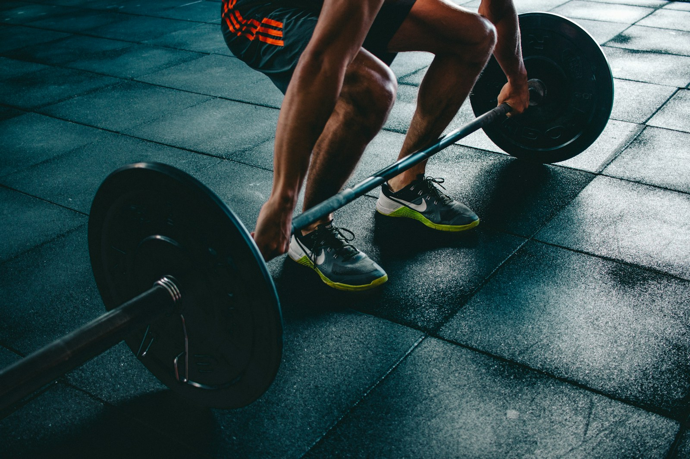
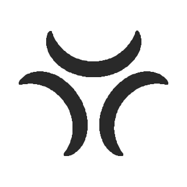

Formas diferentes que se reúnen alrededor de un propósito compartido.
DEPORTE · SALUD · COMUNIDAD
Hay una forma
de moverse.
La tuya.
El deporte nos reúne. La comunidad nos hace avanzar.
Somos una asociación sin ánimo de lucro que promueve la práctica deportiva y los hábitos saludables en todas las etapas de la vida. Desde el primer paso hasta el próximo reto.
Conoce la comunidad ↗DESDE VALÈNCIA CON VOCACIÓN NACIONAL

Cada persona, un punto de partida.
Más participación

Más confianzaMás comunidadDurante todo el año01 / NUESTRA RAZÓN DE SER
El deporte tiene sitio
en todas las vidas.
Creemos en una práctica deportiva que acompaña, se adapta y crea vínculos.
The Season’s Community nace para acercar el entrenamiento funcional, el cross training, la fuerza, la resistencia y las disciplinas afines a personas de distintas edades y niveles. El esfuerzo, la igualdad, el respeto y la cooperación orientan nuestra forma de entender el deporte.
Queremos conectar a personas, centros deportivos y entidades para impulsar experiencias recreativas, educativas y competitivas. Porque participar también es aprender, ganar confianza y sentirse parte de algo.
Sin ánimo de lucroUn proyecto asociativo
Ámbito nacionalCon sede en València
Todas las etapasDistintos niveles y capacidades
THE SEASON’S COMMUNITY
NUESTRO SÍMBOLO / LO QUE NOS UNE
Distintas personas.
Un espacio común.
El deporte nos reúne. Cada persona aporta su propia forma de ser.
Las tres formas curvas de nuestro símbolo se acercan sin perder su identidad. Representan el encuentro, el apoyo mutuo y la comunidad que construimos a través del deporte.
Un centro abierto que expresa acogida a distintas edades, niveles y capacidades.
Curvas que evocan movimiento y una vida activa en todas sus etapas.
El significado de nuestro nombre +
«Season’s» conecta con las estaciones y las etapas de la vida. Cambian las circunstancias y los objetivos; la comunidad permanece y acompaña.
02 / QUÉ IMPULSAMOS
Mucho más
que entrenar.
Nuestras líneas de trabajo conectan actividad física, educación y participación social. La programación concreta se anunciará a medida que se confirmen las actividades.
Jóvenes en movimiento
Iniciativas para acercar el deporte a la juventud, crear hábitos activos y descubrir el valor de la cooperación por encima de la comparación.
LÍNEA DE TRABAJOHábitos que suman
Charlas y talleres sobre alimentación, entrenamiento y seguridad deportiva, con la participación de profesionales de cada ámbito.
LÍNEA DE TRABAJOFuerza en cada etapa
Propuestas para acercar el entrenamiento adaptado a personas adultas y mayores, resolver dudas y abordar prejuicios sobre la edad y el ejercicio.
LÍNEA DE TRABAJOUna comunidad abierta
Encuentros, formación y acciones comunitarias junto a centros deportivos y entidades que compartan los valores de inclusión y participación.
LÍNEA DE TRABAJONUESTRA FORMA DE HACER
Cada punto de partida
merece respeto.
Escuchar
Conocer las necesidades de las personas y del entorno antes de plantear una actividad.
Adaptar
Promover propuestas acordes con la edad, la experiencia y las capacidades de quienes participan.
Acompañar
Fomentar entornos de respeto, orientación profesional y aprendizaje compartido.
Mejorar
Recoger la experiencia de cada proyecto para orientar los siguientes pasos.
EL ESPÍRITU COMPETITIVO DE LA COMUNIDAD
SEASON
GAMES LEAGUE↗
La competición también es una forma de encontrarnos.
Season Games League es nuestro proyecto competitivo de cross training por equipos. Un espacio con identidad propia que comparte la misma raíz: esfuerzo, cooperación y comunidad.
Explorar la web de la liga ↗Explora el área competitiva de The Season’s Community.03 / LAS PERSONAS DETRÁS
Una responsabilidad
compartida.
La junta directiva fundadora coordina el proyecto conforme a los fines y las normas de la asociación.
Héctor Enrique
Ramírez Ortega
Presidencia
Esteban
Fabra Vuillemin
Vicepresidencia
Zaira María
Rojas Benlloch
Secretaría
Eva
Arbalat Giménez
Tesorería
04 / CONSTRUYAMOS EL SIGUIENTE PASO
Las buenas iniciativas
crecen en compañía.
Ayuntamientos, centros educativos, profesionales y entidades deportivas: queremos sumar capacidades para acercar el deporte a más personas.
Entidades públicas
Diseño de propuestas de participación deportiva, jornadas educativas y proyectos comunitarios vinculados al territorio.
Centros y profesionales
Colaboración técnica, espacios de actividad y contenidos sobre entrenamiento y hábitos saludables.
Personas y empresas
Participación asociativa, voluntariado y apoyo a iniciativas alineadas con nuestros fines.
Cómo plantear una colaboración +
Una propuesta puede partir del colectivo al que se dirige, sus necesidades, el lugar de realización y los recursos disponibles. La asociación valorará su encaje con los fines estatutarios antes de concretar compromisos.
Canal de contacto digital y convocatorias de participación: pendientes de publicación. Domicilio de la asociación: calle Alcalde Gurrea, 2, bajo, 46025 València.
IDENTIDAD Y TRANSPARENCIA
Un proyecto con base asociativa.
Datos de la entidad
Denominación estatutaria: Asociación The Seasons’ Community.
NIF: G27697101.
Domicilio: calle Alcalde Gurrea, 2, bajo, 46025 València.
Ámbito de actuación: nacional.
Compromiso institucional
Entidad sin ánimo de lucro. Nuestros fines incluyen la promoción del deporte, la formación, la inclusión y la colaboración con entidades públicas y privadas.
Las actividades y colaboraciones se comunicarán cuando estén confirmadas.
Información sobre esta web +
Esta web presenta la identidad de la entidad y sus líneas de trabajo. No se anuncian inscripciones abiertas ni un calendario confirmado. El canal de contacto digital está pendiente de incorporación.
No se utilizan formularios, analítica ni cookies propias de seguimiento en esta web. Season Games League es el área competitiva de la asociación.